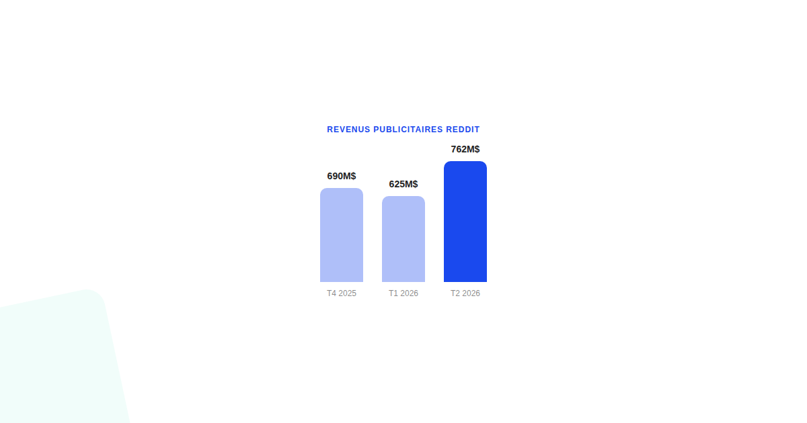
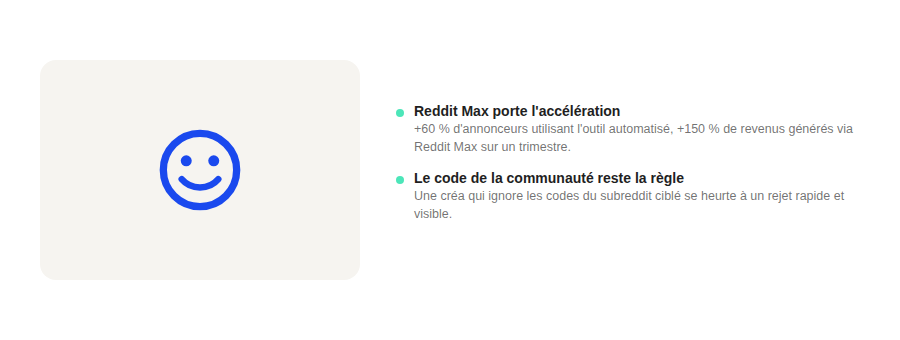

Reddit Ads en 2026 : d'un canal de niche à un canal qu'on ne peut plus ignorer
Les résultats financiers de Reddit publiés en 2026 montrent une croissance publicitaire à deux chiffres élevés, trimestre après trimestre. Avant d'y voir le prochain eldorado ou un simple effet de petite base, un regard sur ce que ces chiffres disent vraiment.

Selon les résultats trimestriels rapportés par la presse financière en 2026, les revenus publicitaires de Reddit ont enchaîné une croissance soutenue : autour de 690 millions de dollars au quatrième trimestre 2025 (+75 % sur un an), 625 millions au premier trimestre 2026 (+74 %), puis 762 millions au deuxième trimestre 2026 (+64 %). Le nombre d'annonceurs actifs progresse à un rythme comparable. Ce n'est plus un signal isolé : c'est une tendance qui tient sur plusieurs trimestres consécutifs.
Ce que les chiffres cachent : l'effet de petite base
Une croissance de 64 à 75 % par an impressionne, mais elle part d'un volume publicitaire nettement plus restreint que celui de Meta ou de TikTok. Mécaniquement, une plateforme plus petite affiche des pourcentages de croissance plus spectaculaires pour un même volume additionnel en valeur absolue. La bonne lecture n'est pas « Reddit dépasse les autres réseaux », mais « Reddit change d'échelle et sort de la case niche ».
Reddit Max : le vrai moteur de cette accélération
Dans les commentaires accompagnant ces résultats, la direction de Reddit met en avant la croissance de « Reddit Max », son offre publicitaire automatisée : nombre d'annonceurs utilisant Reddit Max en hausse de plus de 60 % sur un trimestre, revenus générés via cet outil en hausse de plus de 150 % sur la même période. Cela signale un rattrapage en maturité d'outillage publicitaire : Reddit comble l'écart avec les enchères automatiques déjà banalisées ailleurs, ce qui facilite l'entrée de nouveaux annonceurs qui n'auraient pas eu les ressources pour gérer des campagnes manuelles complexes.

Pour qui ce canal a vraiment un sens
Reddit reste structuré autour de communautés (subreddits) avec des codes et une tolérance très faible à la publicité qui ne s'y adapte pas. Les marques qui en tirent le meilleur parti sont celles qui acceptent de parler le langage natif de ces communautés plutôt que de recycler une créa pensée pour un flux Instagram ou TikTok. Les produits techniques, les marques B2B avec une communauté de passionnés, et les niches à forte identité (gaming, finance personnelle, bricolage, tech) y trouvent un terrain plus favorable qu'une marque grand public généraliste.
Comment en tenir compte dans un mix média
La hausse des annonceurs actifs sur Reddit ne doit pas être un signal pour réallouer un budget déjà performant ailleurs, mais une raison suffisante pour tester, à petite échelle et avec une créa adaptée aux codes du subreddit ciblé, avant d'ouvrir plus largement. Un test mal calibré avec une créa générique sur Reddit se solde presque toujours par un rejet rapide de la communauté, bien plus visible et direct qu'un simple manque de clics.
FAQ
Reddit Ads convient-il à toutes les marques ?
Non, le format fonctionne mieux pour des marques capables de parler le langage natif des communautés ciblées (subreddits) plutôt que de transposer une créa pensée pour Meta ou TikTok. Les marques B2B techniques et les produits de niche à communauté forte en tirent souvent le meilleur parti.
Qu'est-ce que Reddit Max, mentionné dans les résultats financiers ?
Reddit Max est l'offre publicitaire automatisée de la plateforme, pensée pour simplifier la création et l'optimisation de campagnes à la manière des outils d'enchères automatiques des autres réseaux. Sa croissance plus rapide que celle de la publicité classique sur Reddit suggère un rattrapage progressif en maturité d'outillage.
Les chiffres de croissance de Reddit sont-ils comparables à ceux de Meta ou TikTok ?
Non, ils partent d'une base beaucoup plus petite, ce qui mécaniquement produit des taux de croissance en pourcentage plus spectaculaires. La bonne lecture est celle d'un canal qui change d'échelle, pas d'un canal qui dépasserait Meta ou TikTok en volume absolu.
Envie de tester un nouveau canal publicitaire dans votre mix média ?
Pour aller plus loin, voir la page SMA, et l'article Le funnel TikTok Ads qui fonctionne vraiment en B2C.
Pour continuer sur ce sujet.